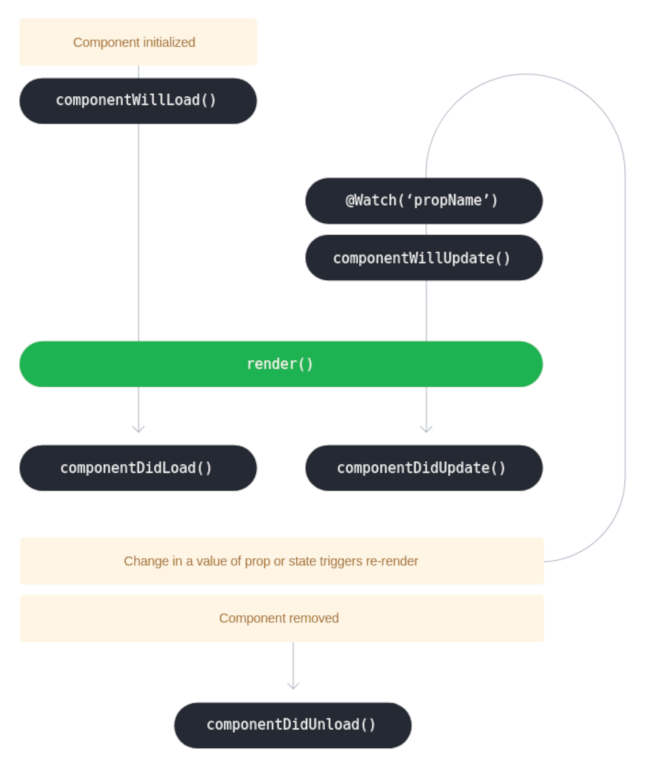

Component Lifecycle

Decorators
@Component
import { Component } from '@stencil/core';
@Component({
tag: 'todo-list',
styleUrl: 'todo-list.css'
/* styleUrls: [...] */,
/* styles: '' */,
shadow: true | false
})
export class TodoList {
...
}
@Prop
Declare an attribute for the outside, not directly mutable from the inside.
import { Prop } from '@stencil/core';
export class TodoList {
@Prop() color: string;
@Prop() favoriteNumber: number;
@Prop() isSelected: boolean;
@Prop({ mutable: true, reflectToAttr: true }) name: string = 'Stencil';
componentDidLoad() {
this.name = 'Stencil 0.7.0';
}
}
/* in HTML */
<todo-list color="blue" favorite-number="24" is-selected="true"></todo-list>
/* in JSX */
<todo-list color="blue" favoriteNumber={24} isSelected="true"></todo-list>
@State
Declare an internal state only for the inside.
import { State } from '@stencil/core';
export class TodoList {
@State() completedTodos: Todo[];
completeTodo(todo: Todo) {
/* This will cause our render function to be called again */
this.completedTodos = [...this.completedTodos, todo];
}
}
Update an array
this.names = [ ...this.names, 'Larry' ]
Update an object
this.options = { ...this.options, show: true }